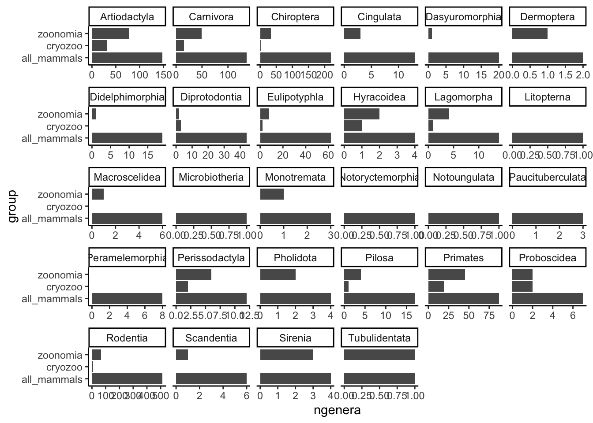

Last updated: 2022-11-25
Checks: 7 0
Knit directory: Cryozoo_project/
This reproducible R Markdown analysis was created with workflowr (version 1.7.0). The Checks tab describes the reproducibility checks that were applied when the results were created. The Past versions tab lists the development history.
Great! Since the R Markdown file has been committed to the Git repository, you know the exact version of the code that produced these results.
Great job! The global environment was empty. Objects defined in the global environment can affect the analysis in your R Markdown file in unknown ways. For reproduciblity it’s best to always run the code in an empty environment.
The command set.seed(20221125) was run prior to running
the code in the R Markdown file. Setting a seed ensures that any results
that rely on randomness, e.g. subsampling or permutations, are
reproducible.
Great job! Recording the operating system, R version, and package versions is critical for reproducibility.
Nice! There were no cached chunks for this analysis, so you can be confident that you successfully produced the results during this run.
Great job! Using relative paths to the files within your workflowr project makes it easier to run your code on other machines.
Great! You are using Git for version control. Tracking code development and connecting the code version to the results is critical for reproducibility.
The results in this page were generated with repository version beac9a1. See the Past versions tab to see a history of the changes made to the R Markdown and HTML files.
Note that you need to be careful to ensure that all relevant files for
the analysis have been committed to Git prior to generating the results
(you can use wflow_publish or
wflow_git_commit). workflowr only checks the R Markdown
file, but you know if there are other scripts or data files that it
depends on. Below is the status of the Git repository when the results
were generated:
Ignored files:
Ignored: .RData
Ignored: .Rhistory
Ignored: .Rproj.user/
Untracked files:
Untracked: analysis/Tree_plots.Rmd
Untracked: analysis/matching_info.Rmd
Untracked: data/GenomeOnATree_tetra_3.10.22.tsv
Untracked: data/List of species.xlsx
Untracked: data/SAMPLES LIST WORK _25.11.22.xlsx
Untracked: data/Wrong_Species_names.xlsx
Untracked: data/desktop.ini
Untracked: output/Sample_List_Mammal_clean.csv
Untracked: output/Sample_List_Mammal_clean.rds
Untracked: output/Sample_List_Tetrapod_clean.csv
Untracked: output/Sample_List_Tetrapod_clean.rds
Untracked: output/Sample_List_all_species_clean.csv
Untracked: output/Sample_List_all_species_clean.rds
Untracked: output/Selected_species.rds
Untracked: output/Species_List.rds
Untracked: output/Species_List_with_genome_and_cl_info.rds
Untracked: output/Species_List_with_genome_info.rds
Untracked: output/bird_names.csv
Note that any generated files, e.g. HTML, png, CSS, etc., are not included in this status report because it is ok for generated content to have uncommitted changes.
These are the previous versions of the repository in which changes were
made to the R Markdown (analysis/Generate_Lists.Rmd) and
HTML (docs/Generate_Lists.html) files. If you’ve configured
a remote Git repository (see ?wflow_git_remote), click on
the hyperlinks in the table below to view the files as they were in that
past version.
| File | Version | Author | Date | Message |
|---|---|---|---|---|
| html | 67383b2 | Lucas Esteban Wange | 2022-11-25 | Build site. |
| Rmd | 095b51b | Lucas Esteban Wange | 2022-11-25 | Start my new project |
| html | ee20528 | Lucas Esteban Wange | 2022-11-25 | Build site. |
| html | 41a9086 | Lucas Esteban Wange | 2022-11-25 | Build site. |
| Rmd | d925513 | Lucas Esteban Wange | 2022-11-25 | Start my new project |
In this script the tables from the Google sheet List of Species will be summarized into one species table and one sample table. The species table contains all the information on a species level such as, genome avaliability, iucn status, taxonomy and number and type of samples. The sample table will contain information about the individual samples such as sex, age, tissue of origin, storage location etc.
Those tables will be generated for mammals as well as for the remaining tetrapods (Birds,Reptiles, Amphibians).
library(tidyverse)
library(cowplot)
library(readxl)
library(runner)
theme_set(theme_classic())
here::here()[1] "C:/Users/Lucas/Documents/Marques_Bonet_Lab/1_Cryozoo_project/Cryozoo_project"path<-here::here()Import table:
List_of_species <- read_excel(paste0(path,"/data/List of species.xlsx"),
sheet = "SPECIES LIST")
colnames(List_of_species)<-janitor::make_clean_names(colnames(List_of_species))
List_of_species<-List_of_species %>%
rename(specie_name_cites=scientific_name)Tidy up table:
List_of_species<-List_of_species %>%
filter(class!="FISH") %>%
mutate(class=str_to_title(class),
class=if_else(class=="Bird","Aves",class)) %>%
mutate(cell_line=gsub(cell_line,pattern = "x",replacement = "Fibro")) %>%
mutate(cell_line=gsub(cell_line,pattern = "X",replacement = "Fibro")) %>%
mutate(cell_line=gsub(cell_line,pattern = "PBMc/Fibro",replacement = "Fibro/PBMc"))%>%
mutate(cell_line=if_else(is.na(cell_line),"No cell line",cell_line)) %>%
mutate(cell_line=if_else(is.na(cell_line),"No cell line",cell_line)) %>%
mutate(iucn_category=if_else(iucn_category %in% c(NA,"NOT APPLICABLE","DD","??"),"NA",iucn_category))%>%
mutate(iucn_category=factor(iucn_category,levels=c("NA","LEAST CONCERN","VULNERABLE","NEAR THREATENED","ENDANGERED","CRITICALLY ENDANGERED","EXTINCT IN THE WILD"))) %>%
mutate(samples=as.numeric(samples),
samples=if_else(is.na(samples),1,samples)) %>%
mutate(order=as.factor(order)) %>%
separate(specie_name_cites,into=c("n1","n2","subspecies")) %>%
mutate(n1=stringr::str_to_title(n1),
n2=tolower(n2)) %>%
unite(c(n1,n2),col = "specie_name_cites",sep=" ") %>%
mutate(specie_name_cites=gsub(x=specie_name_cites,pattern = "?",replacement = "")) %>%
arrange(order) Warning in mask$eval_all_mutate(quo): NAs durch Umwandlung erzeugtWarning: Expected 3 pieces. Missing pieces filled with `NA` in 171 rows [1, 2,
3, 4, 5, 6, 7, 8, 10, 11, 12, 13, 14, 15, 16, 17, 18, 20, 21, 22, ...].Replace problematic species names
species_names<-read_excel(paste0(path,"/data/Wrong_Species_names.xlsx"))
species_names<-species_names[match(List_of_species$specie_name_cites[
which(List_of_species$specie_name_cites%in%species_names$specie_name_cites_species)],
species_names$specie_name_cites_species,
incomparables = F),] %>%
mutate(specie_name_cites=specie_name_cites_species)
List_of_species<-List_of_species %>%
left_join(species_names) %>%
mutate(specie_name_cites=if_else(!(is.na(goat_name)),
goat_name,
specie_name_cites),
alternative_name=if_else(specie_name_cites==goat_name,
specie_name_cites_species,
specie_name_cites)) %>%
select(-c(goat_name,specie_name_cites_sample,specie_name_cites_species,group))Joining, by = "specie_name_cites"List_of_species[duplicated(List_of_species$specie_name_cites),]# A tibble: 3 × 19
specie_na…¹ subsp…² commo…³ family subfa…⁴ cites…⁵ iucn_…⁶ samples sex class
<chr> <chr> <chr> <chr> <chr> <chr> <fct> <dbl> <chr> <chr>
1 Panthera p… saxico… Persia… Felid… <NA> I VULNER… 1 M Mamm…
2 Chamaeleo … <NA> Medite… Chama… <NA> II LEAST … 1 <NA> Rept…
3 Oryctolagu… <NA> <NA> Lepor… <NA> - NA 1 F Mamm…
# … with 9 more variables: order <fct>, cell_line <chr>, karyotype <chr>,
# dna <chr>, rna <chr>, sequencing <chr>, i_psc <chr>, sample <chr>,
# alternative_name <chr>, and abbreviated variable names ¹specie_name_cites,
# ²subspecies, ³common_name, ⁴subfamily, ⁵cites_annex, ⁶iucn_categoryThere are duplicated species in the species table which turn out to be subspecies. I will treat them as the same for now.
dup_sum<-full_join(List_of_species[duplicated(List_of_species$specie_name_cites),],
List_of_species[duplicated(List_of_species$specie_name_cites,fromLast = T),],
by=c("specie_name_cites",
"family",
"subfamily",
"cites_annex",
"class")) %>%
mutate(subspecies=case_when(is.na(subspecies.x)~subspecies.y,
is.na(subspecies.y)~subspecies.x,
!(is.na(subspecies.x))&!(is.na(subspecies.y))~paste(subspecies.x,
subspecies.y,sep=",")),
common_name=case_when(is.na(common_name.x)~common_name.y,
is.na(common_name.y)~common_name.x,
!(is.na(common_name.x))&!(is.na(common_name.y))~paste(common_name.x,
common_name.y,sep=",")),
cell_line=case_when(is.na(cell_line.x)~cell_line.y,
is.na(cell_line.y)~cell_line.x,
!(is.na(cell_line.x))&!(is.na(cell_line.y))~paste(cell_line.x,
cell_line.y,sep=",")),
sample=case_when(is.na(sample.x)~sample.y,
is.na(sample.y)~sample.x,
!(is.na(sample.x))&!(is.na(sample.y))~paste(sample.x,
sample.y,sep=",")),
samples=samples.x+samples.y,
order=order.x,
iucn_category=iucn_category.x,
karyotype=NA,
dna=NA,
rna=NA,
sequencing=NA,
i_psc=NA
) %>%
select(-c(ends_with(".x"),ends_with(".y")))
dup_species<-List_of_species[duplicated(List_of_species$specie_name_cites),]$specie_name_cites
List_of_species<-List_of_species %>%
filter(!(specie_name_cites %in% dup_species)) %>%
bind_rows(dup_sum) %>%
mutate(order=as.character(order)) %>%
mutate(scientific_name_=gsub(specie_name_cites,pattern = " ",replacement = "_"))head(List_of_species)# A tibble: 6 × 20
specie_na…¹ subsp…² commo…³ family subfa…⁴ cites…⁵ iucn_…⁶ samples sex class
<chr> <chr> <chr> <chr> <chr> <chr> <fct> <dbl> <chr> <chr>
1 Butorides … <NA> Striat… Ardei… <NA> - LEAST … 1 <NA> Aves
2 Marmaronet… <NA> Marble… Anati… <NA> - VULNER… 1 <NA> Aves
3 Netta pepo… <NA> Rosy-b… Anati… <NA> - LEAST … 1 <NA> Aves
4 Anas platy… <NA> Mallard Anati… <NA> ? LEAST … 1 <NA> Aves
5 Netta rufi… <NA> Red-cr… Anati… <NA> <NA> LEAST … 1 <NA> Aves
6 Chauna tor… <NA> Southe… Anhim… <NA> - LEAST … 1 M Aves
# … with 10 more variables: order <chr>, cell_line <chr>, karyotype <chr>,
# dna <chr>, rna <chr>, sequencing <chr>, i_psc <chr>, sample <chr>,
# alternative_name <chr>, scientific_name_ <chr>, and abbreviated variable
# names ¹specie_name_cites, ²subspecies, ³common_name, ⁴subfamily,
# ⁵cites_annex, ⁶iucn_categorysaveRDS(List_of_species,paste0(path,"/output/Species_List.rds"))GOAT_info <- read_delim(paste0(path,"/data/GenomeOnATree_tetra_3.10.22.tsv"),
delim = "\t", escape_double = FALSE,
col_types = cols(taxon_id = col_character()),
trim_ws = TRUE)
table((List_of_species$specie_name_cites %in% GOAT_info$scientific_name),List_of_species$class)
Amphibia Aves Mammalia Reptil
TRUE 5 70 92 19List_of_species[!(List_of_species$specie_name_cites %in% GOAT_info$scientific_name),]# A tibble: 0 × 20
# … with 20 variables: specie_name_cites <chr>, subspecies <chr>,
# common_name <chr>, family <chr>, subfamily <chr>, cites_annex <chr>,
# iucn_category <fct>, samples <dbl>, sex <chr>, class <chr>, order <chr>,
# cell_line <chr>, karyotype <chr>, dna <chr>, rna <chr>, sequencing <chr>,
# i_psc <chr>, sample <chr>, alternative_name <chr>, scientific_name_ <chr>List_of_species_new<-inner_join(List_of_species,GOAT_info,by=c("specie_name_cites"="scientific_name")) %>%
mutate(common_name=case_when(is.na(common_name.x)~common_name.y,
common_name.x==common_name.y~common_name.y,
common_name.x!=common_name.y~paste(common_name.x,common_name.y,sep=","),
T~NA_character_),
family=case_when(is.na(family.y)~family.x,
is.na(family.x)~family.y,
family.x==family.y~family.y,
family.x!=family.y~family.y,
T~NA_character_),
class=case_when(is.na(class.y)~class.x,
is.na(class.x)~class.y,
class.x==class.y~class.y,
class.x!=class.y~class.x,
T~NA_character_),
order=case_when(is.na(order.y)~order.x,
is.na(order.x)~order.y,
order.x==order.y~order.y,
order.x!=order.y~order.y,
T~NA_character_)) %>%
select(-c(ends_with(".x"),ends_with(".y"),taxon_rank))
saveRDS(List_of_species_new,paste0(path,"/output/Species_List_with_genome_info.rds"))mammals_list <- read_excel(paste0(path,"/data/List of species.xlsx"),
sheet = "MAMMALIA", skip = 1)[-1,-2]New names:
• `` -> `...1`
• `` -> `...2`
• `` -> `...7`colnames(mammals_list)<-janitor::make_clean_names(colnames(mammals_list))
##Make a clean tidy table for mammals
mammals_list_clean<-mammals_list %>%
mutate(x1=fill_run(x1,run_for_first = F),
specie_name_cites=fill_run(specie_name_cites),
common_name=fill_run(common_name),
family=fill_run(family),
iucn=fill_run(iucn)) %>%
filter(!(is.na(zims_species360)&is.na(barcode))) %>%
mutate(barcode=if_else(is.na(barcode)& grepl(x = x7,pattern = "^A"),x7,barcode)) %>%
mutate(x7=if_else(grepl(x = x7,pattern = "^A"),NA_character_,x7)) %>%
mutate(iPSC=grepl(x7,pattern="iPSC")) %>%
separate(barcode,sep = "/",into = c("position1","position2","position3")) %>%
separate(x7,sep = "/",into = c("cell_type","type1","type2","type3","type4")) %>%
mutate(cell_type=case_when(cell_type=="C"~"Fibro",
cell_type=="PBMC"~"PBMc",
cell_type=="BLOOD"~"PBMc",
cell_type=="PMBc isolation"~"PBMc",
cell_type=="?"~"unclear",
cell_type=="-"~"unclear",
is.na(cell_type)~"Primary",
T~as.character(cell_type))) %>%
mutate(status=cell_type!="Primary") %>%
separate(specie_name_cites,into=c("n1","n2","subspecies")) %>%
mutate(n1=stringr::str_to_title(n1),
n2=tolower(n2)) %>%
unite(c(n1,n2),col = "specie_name_cites",sep=" ") %>%
mutate(specie_name_cites=gsub(x=specie_name_cites,pattern = "?",replacement = ""),
class="Mammalia") Warning: Expected 3 pieces. Missing pieces filled with `NA` in 191 rows [1, 3,
4, 5, 6, 7, 9, 10, 11, 12, 13, 14, 16, 18, 19, 20, 21, 22, 23, 24, ...].Warning: Expected 5 pieces. Missing pieces filled with `NA` in 153 rows [1, 4,
6, 11, 12, 13, 14, 18, 19, 20, 23, 24, 27, 28, 29, 30, 32, 33, 34, 35, ...].Warning: Expected 3 pieces. Missing pieces filled with `NA` in 164 rows [13, 14,
15, 16, 17, 18, 19, 20, 21, 22, 23, 24, 25, 26, 27, 28, 29, 30, 31, 32, ...].species_names_mammals<-subset(species_names,group=="Mammals")
species_names_mammals<-species_names_mammals[match(mammals_list_clean$specie_name_cites[
which(mammals_list_clean$specie_name_cites%in%species_names_mammals$specie_name_cites_sample)],
species_names_mammals$specie_name_cites_sample,
incomparables = F),]
mammals_list_clean$specie_name_cites[which(
mammals_list_clean$specie_name_cites%in%species_names_mammals$specie_name_cites_sample)
]<-species_names_mammals$goat_name
saveRDS(mammals_list_clean,paste0(path,"/output/Sample_List_Mammal_clean.rds"))
write_excel_csv(mammals_list_clean,paste0(path,"/output/Sample_List_Mammal_clean.csv"))tetra_list <- read_excel(paste0(path,"/data/List of species.xlsx"),
sheet = "AMPHIBIAN",
col_names = T)[-1,-2]New names:
• `` -> `...1`
• `` -> `...2`
• `` -> `...7`
• `` -> `...8`tetra_list$class<-"Amphibian"
tetra_list<-bind_rows(tetra_list,
read_excel(paste0(path,"/data/List of species.xlsx"),
sheet = "REPTIL",col_names = T)[-c(1),-2])New names:
New names:
New names:
• `` -> `...1`
• `` -> `...2`
• `` -> `...7`
• `` -> `...8`tetra_list$class[is.na(tetra_list$class)]<-"Reptiles"
tetra_list<-bind_rows(tetra_list,
read_excel(paste0(path,"/data/List of species.xlsx"),
sheet = "BIRD",col_names = T,skip = 1)[-1,-2])New names:
New names:
• `` -> `...1`
• `` -> `...2`
• `` -> `...7`
• `` -> `...8`tetra_list$class[is.na(tetra_list$class)]<-"Aves"
colnames(tetra_list)<-janitor::make_clean_names(colnames(tetra_list))tetra_list_clean<-tetra_list %>%
mutate(x1=fill_run(x1,run_for_first = F),
specie_name_cites=fill_run(specie_name_cites),
common_name=fill_run(common_name),
family=fill_run(family),
iucn=fill_run(iucn)) %>%
filter(!(is.na(zims_species360)&is.na(x7)&is.na(x6))) %>%
rename(barcode=x7) %>%
separate(barcode,sep = "/",into = c("position1","position2","position3")) %>%
separate(x6,sep = "/",into = c("cell_type","type1","type2","type3","type4")) %>%
mutate(cell_type=case_when(cell_type=="C"~"Fibro",
cell_type=="PBMC"~"PBMc",
cell_type=="BLOOD"~"PBMc",
cell_type=="PMBc isolation"~"PBMc",
cell_type=="?"~"unclear",
cell_type=="-"~"unclear",
is.na(cell_type)~"Primary",
T~as.character(cell_type))) %>%
mutate(status=cell_type!="Primary") %>%
separate(specie_name_cites,into=c("n1","n2","subspecies")) %>%
mutate(n1=stringr::str_to_title(n1),
n2=tolower(n2)) %>%
unite(c(n1,n2),col = "specie_name_cites",sep=" ") %>%
mutate(specie_name_cites=gsub(x=specie_name_cites,pattern = "?",replacement = "")) %>%
mutate(sample_id=NA,
iPSC=F)Warning: Expected 3 pieces. Missing pieces filled with `NA` in 133 rows [1, 2,
3, 4, 5, 6, 7, 8, 9, 10, 11, 12, 13, 14, 15, 16, 17, 18, 19, 20, ...].Warning: Expected 5 pieces. Missing pieces filled with `NA` in 39 rows [19, 20,
38, 41, 51, 53, 54, 55, 60, 62, 63, 64, 71, 72, 75, 77, 80, 88, 89, 90, ...].Warning: Expected 3 pieces. Missing pieces filled with `NA` in 135 rows [1, 2,
3, 4, 5, 6, 7, 8, 9, 10, 11, 12, 13, 14, 15, 16, 17, 18, 19, 20, ...].### correct names
species_names_tetra<-subset(species_names,group!="Mammals")
species_names_tetra<-species_names_tetra[match(tetra_list_clean$specie_name_cites[
which(tetra_list_clean$specie_name_cites%in%species_names_tetra$specie_name_cites_sample)],
species_names_tetra$specie_name_cites_sample,
incomparables = F),]
tetra_list_clean$specie_name_cites[which(
tetra_list_clean$specie_name_cites%in%species_names_tetra$specie_name_cites_sample)
]<-species_names_tetra$goat_name
saveRDS(tetra_list_clean,paste0(path,"/output/Sample_List_Tetrapod_clean.rds"))
write_excel_csv(tetra_list_clean,paste0(path,"/output/Sample_List_Tetrapod_clean.csv"))combined_sample<-bind_rows(tetra_list_clean,mammals_list_clean) %>%
select(-x1) %>%
mutate(species_short=paste(str_to_title(substr(str_split(string = specie_name_cites,
pattern = " ",
simplify=T)[,1],1,3)),
str_to_title(substr(str_split(string = specie_name_cites,
pattern = " ",
simplify=T)[,2],1,3)),sep="_")) %>%
group_by(species_short) %>%
mutate(sample_id=paste(sep="_",species_short,row_number()))
saveRDS(combined_sample,
paste0(path,"/output/Sample_List_all_species_clean.rds"))
write_excel_csv(combined_sample,
paste0(path,"/output/Sample_List_all_species_clean.csv"))Add Info about cell lines to Species Table:
summary_species<-combined_sample %>%
group_by(specie_name_cites,subspecies,common_name,family) %>%
summarize(samples_cl=n(),
cell_lines=sum(status),
fibro=sum(cell_type=="Fibro"),
pbmc=sum(cell_type=="PBMc"),
ipsc=sum(iPSC)) %>%
ungroup()`summarise()` has grouped output by 'specie_name_cites', 'subspecies',
'common_name'. You can override using the `.groups` argument.Species_list_complete<-List_of_species_new%>%
inner_join(select(summary_species,c(specie_name_cites,samples_cl,cell_lines,fibro,pbmc,ipsc)),by="specie_name_cites")
saveRDS(Species_list_complete,paste0(path,"/output/Species_List_with_genome_and_cl_info.rds"))Entries only found in sample table:
Entries only found in sample table:
List_of_species %>%
select(specie_name_cites,samples,sample,sex,cell_line,i_psc) %>%
inner_join(summary_species) %>%
ggplot()+
geom_point(aes(samples,samples_cl))+
geom_abline(slope = 1,intercept = 0)Joining, by = "specie_name_cites"
sum<-List_of_species %>%
select(specie_name_cites,samples,sample,sex,cell_line,i_psc) %>%
inner_join(summary_species) %>%
mutate(comp=case_when(samples==samples_cl~"same",
samples>samples_cl~"more in species list",
samples<samples_cl~"more in sample list"
))Joining, by = "specie_name_cites"table(sum$comp)
more in sample list more in species list same
11 8 168 The final tables are:
df_path<-data.frame(Table=c("Species Table",
"Species Table + Genome Info","Species Table + Genome + Cell lines","Sample Table Mammals","Sample Table other","Sample Table All"),
Path=c("/output/Species_List.rds","/output/Species_List_with_genome_info.rds","/output/Species_List_with_genome_and_cl_info.rds","/output/Sample_List_Mammal_clean.rds",
"/output/Sample_List_Tetrapod_clean.rds", "/output/Sample_List_all_species_clean.rds"))
knitr::kable(df_path)| Table | Path |
|---|---|
| Species Table | /output/Species_List.rds |
| Species Table + Genome Info | /output/Species_List_with_genome_info.rds |
| Species Table + Genome + Cell lines | /output/Species_List_with_genome_and_cl_info.rds |
| Sample Table Mammals | /output/Sample_List_Mammal_clean.rds |
| Sample Table other | /output/Sample_List_Tetrapod_clean.rds |
| Sample Table All | /output/Sample_List_all_species_clean.rds |
sessionInfo()R version 4.2.1 (2022-06-23 ucrt)
Platform: x86_64-w64-mingw32/x64 (64-bit)
Running under: Windows 10 x64 (build 22621)
Matrix products: default
locale:
[1] LC_COLLATE=German_Germany.utf8 LC_CTYPE=German_Germany.utf8
[3] LC_MONETARY=German_Germany.utf8 LC_NUMERIC=C
[5] LC_TIME=German_Germany.utf8
attached base packages:
[1] stats graphics grDevices utils datasets methods base
other attached packages:
[1] runner_0.4.2 readxl_1.4.1 cowplot_1.1.1 forcats_0.5.2
[5] stringr_1.4.1 dplyr_1.0.10 purrr_0.3.5 readr_2.1.3
[9] tidyr_1.2.1 tibble_3.1.8 ggplot2_3.3.6 tidyverse_1.3.2
[13] workflowr_1.7.0
loaded via a namespace (and not attached):
[1] httr_1.4.4 sass_0.4.2 bit64_4.0.5
[4] vroom_1.6.0 jsonlite_1.8.3 here_1.0.1
[7] modelr_0.1.9 bslib_0.4.0 assertthat_0.2.1
[10] getPass_0.2-2 highr_0.9 googlesheets4_1.0.1
[13] cellranger_1.1.0 yaml_2.3.6 pillar_1.8.1
[16] backports_1.4.1 glue_1.6.2 digest_0.6.30
[19] promises_1.2.0.1 rvest_1.0.3 snakecase_0.11.0
[22] colorspace_2.0-3 htmltools_0.5.3 httpuv_1.6.6
[25] pkgconfig_2.0.3 broom_1.0.1 haven_2.5.1
[28] scales_1.2.1 processx_3.8.0 whisker_0.4
[31] later_1.3.0 tzdb_0.3.0 git2r_0.30.1
[34] googledrive_2.0.0 farver_2.1.1 generics_0.1.3
[37] ellipsis_0.3.2 cachem_1.0.6 withr_2.5.0
[40] janitor_2.1.0 cli_3.4.1 magrittr_2.0.3
[43] crayon_1.5.2 evaluate_0.17 ps_1.7.2
[46] fs_1.5.2 fansi_1.0.3 xml2_1.3.3
[49] tools_4.2.1 hms_1.1.2 gargle_1.2.1
[52] lifecycle_1.0.3 munsell_0.5.0 reprex_2.0.2
[55] callr_3.7.2 compiler_4.2.1 jquerylib_0.1.4
[58] rlang_1.0.6 grid_4.2.1 rstudioapi_0.14
[61] labeling_0.4.2 rmarkdown_2.17 gtable_0.3.1
[64] DBI_1.1.3 R6_2.5.1 lubridate_1.8.0
[67] knitr_1.40 bit_4.0.4 fastmap_1.1.0
[70] utf8_1.2.2 rprojroot_2.0.3 stringi_1.7.8
[73] parallel_4.2.1 Rcpp_1.0.9 vctrs_0.5.0
[76] dbplyr_2.2.1 tidyselect_1.2.0 xfun_0.34